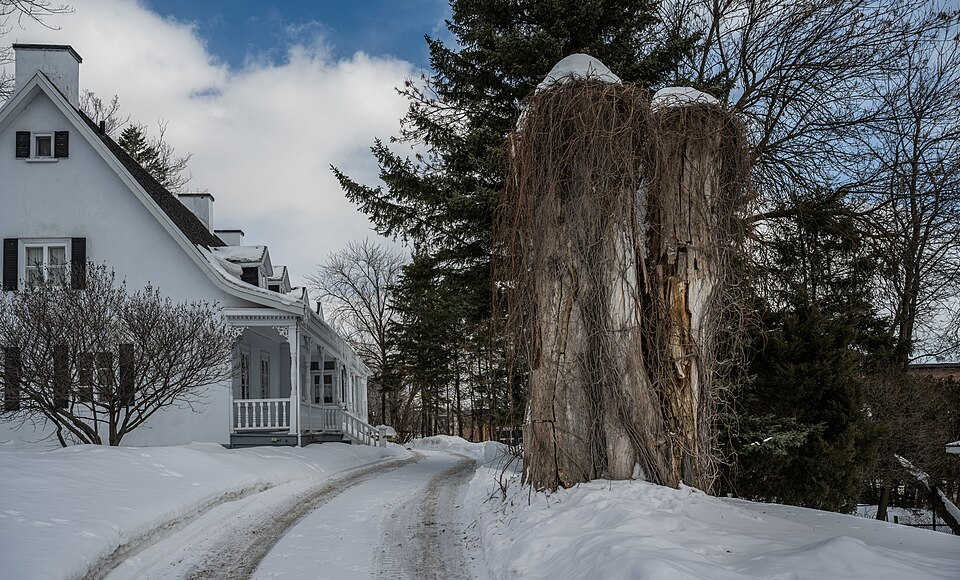
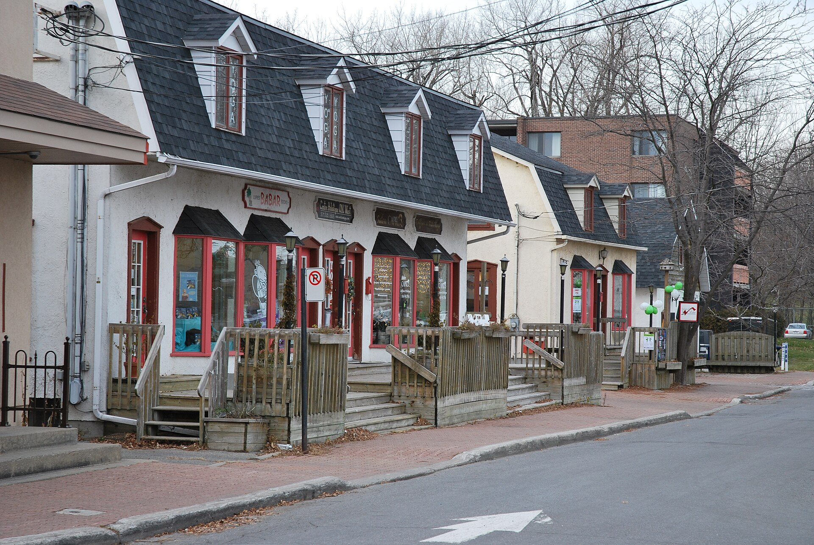
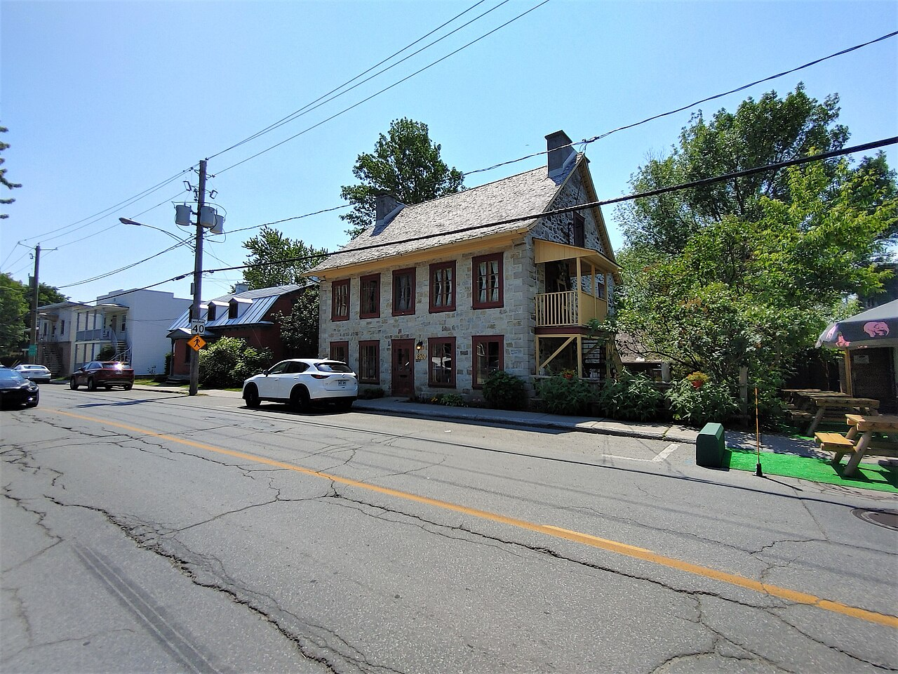

| Place | Local name | Phase years | Storeys | Roof | Window | Cladding | Garage |
|---|---|---|---|---|---|---|---|
| Charlesbourg (Trait-Carré) | Québec house of neoclassical inspiration La maison québécoise d'inspiration néoclassique | 1760 – 1875 | – | gabled | vertical | wood-board-vertical, wood-clapboard, fieldstone-rendered | – |
| Île d'Orléans | Traditional Québec house of neoclassical influence La maison traditionnelle québécoise d'influence néoclassique | 1760 – 1840 | 1.5–2.5 | gabled | vertical | wood, brick, fieldstone-rendered | – |
| Lévis | Québécois traditional house Québécois | 1780 – 1861 | 1.5–2.5 | bellcast | – | wood-clapboard, wood-shingle | – |
| Pointe-Claire | Traditional Québec house of the village core La maison de tradition québécoise du noyau villageois | 1760 – 1855 | 1.5 | gabled | – | roughcast, fieldstone, wood-clapboard | none |
| Québec City | Québécois neoclassical house Maison néoclassique québécoise | 1820 – 1880 | 1.5 | gabled | vertical | wood-clapboard, wood-shingle, clay-brick | – |
| Saint-Lambert | Traditional French and Québécois house La maison traditionnelle française et québécoise | 1700 – 1830 | 1.5 | gabled | vertical | stone, roughcast, wood | none |
| Sainte-Anne-de-Bellevue | Traditional Québec house of the village core La maison de tradition québécoise du noyau villageois | 1760 – 1855 | 1.5 | gabled | – | roughcast, fieldstone, wood-clapboard | none |
| Vieux-Terrebonne | Neoclassical Québécois stone house La maison québécoise d'inspiration néoclassique | 1832 – 1900 | 2.5 | gabled | vertical | stone | – |





